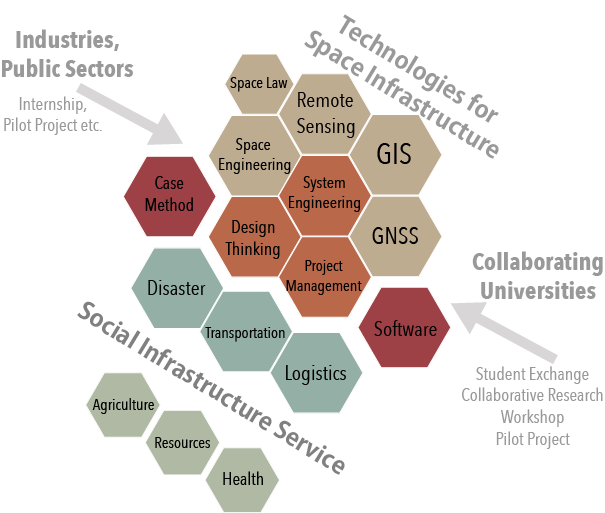

What’s G-SPASE
{kind=link}
G-SPASE is an international education program for undergraduate and graduate students in Asian countries. This program aims to create adequate peoples who can turn knowledge of space infrastructure into action for social infrastructure services. The University of Tokyo, Keio University, and Tokyo University of Marine Science and Technology have individual distinctive area of research. The consortium of the universities is presenting special educational experiences. (Download G-Spase flyer)
Programs of G-SPASE
Monthly tutorial and summer school for efficient knowledge understanding and skill up. Moreover, technical and real experience through from real project activities.
- Monthly tutorial and summer school / System design and management, space engineering, remote sensing, satellite positioning system, and geographic information systems etc.
- Real projects with administrative or industrial organizations for social services / Bangladesh, Thailand, Indonesia, Japan)
Characteristics of G-SPASE
- G-SPASE program covers a space and ground infrastructure, social infrastructure services, and system design management comprehensively.
- G-SPASE carry on under harmonious relationships with major international and domestic universities, chief organizations, and aggressive companies.
- Unity of educational materials and case studies, turning knowledge into action, and real-project experiences are tackled systematically.
1．G-SPASE G-SPASEプログラムは、日本を含むアジア各国からの大学生・大学院生を主な対象とした国際教育プログラムです。宇宙インフラと地上インフラを統合しながら様々な革新的ソーシャルサービスを創出、あるいは再構築を行うといったサービスやシステムのデザイン力やマネジメント力を持った人材を育成することを目指しており、それぞれ特色のある3大学が連携することにより、総合的な教育を実施します。（ブローシャはこちら）
2．G-SPASEプログラムの主な内容 知識や技能の向上のためのマンスリーチュートリアルおよびサマースクールと、実際のプロジェクトに参加して得た知識や技能を試すリアルプロジェクトを実施することで教育効果を高めます。
- マンスリーチュートリアルおよびサマースクール 主な講義：システムデザイン、マネジメント、宇宙工学、リモートセンシング、測位、GISなど
- 行政、産業界との連携によるソーシャルサービスに関係したリアルプロジェクト 主な対象地域：バングラディッシュ、タイ、インドネシア、日本（東京近郊）など
3． G-SPASEプログラムの特色
- 宇宙インフラ利活用人材育成のために必要な宇宙インフラ、地上インフラ、社会基盤サービス、システムデザイン・マネジメント、などを網羅する教育が3大学の連携によって実現します。
- アジア工科大学など各国主要大学や国内の主要機関、企業との緊密な連携に支えられています。
- チュートリアルやリアルプロジェクトを効果的に実施するために、教育用ソフトウェア、ケースによる教育が統合され、知識獲得から実体化、実践的な訓練が体系的にカバーされています。
{kind=link}